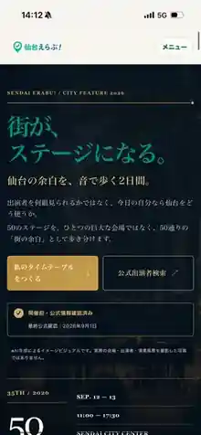

ITについて聞ける人がいない
社内に詳しい人がおらず、何から始めればよいか判断できない。

SENDAI / OUTSOURCED IT ADVISER
仙台・宮城｜中小企業向け
IT・AI・業務改善を、何を入れるか決まっていない段階から相談。必要なときだけ実装まで担います。
¥10,000/ 月〜
税別相談窓口を一本化IT・AI・業務改善をまず聞ける
会社を継続して把握毎回ゼロから説明しなくていい
必要な時だけ実装設定・自動化・開発は別途明確に
WHO YOU TALK TO
相談相手と実装責任者を分けず、経営課題の整理から必要な実装まで一貫して見ます。
BUILD PROOF / OWN PRODUCT
提案だけではなく、企画・データ設計・UI・実装まで自分たちでつくる。その一例を公開しています。
OWN PRODUCT 001 / SENDAI ERABU!
音楽の好み・気分・時間・開始エリア・歩行量・新しい音との距離から、フェスの一日を構成するMY JAZZ DAY。

COMMON PROBLEMS
「IT部門をつくるほどではない」が、最も困りやすい規模です。
社内に詳しい人がおらず、何から始めればよいか判断できない。
見積・案件・顧客情報が分散し、確認や転記に時間がかかる。
興味はあるものの、自社のどの業務に使うべきか決められない。
判断や確認が社長に集中し、社員を増やしても仕事が減らない。
MIYAGI DATA / 2026
宮城県の県内事業者デジタル化実態調査でも、デジタル推進の担当・体制不足が課題として表れています。SGPは、その空白を社外から埋めます。
出典：宮城県「令和8年度県内事業者デジタル化実態調査」 ↗デジタル化を推進する
専門部署・職位がない
6〜20名規模で
デジタル化が十分進んでいない
YOUR IT ADVISER
必要なツールを売ることが目的ではありません。会社のIT・AIについて、困ったときに最初に相談されるポジションを担います。
※ SGPは士業ではありません。税務・労務・法務など資格を要する業務は各専門家の領域とし、SGPはIT・AI・業務改善の相談と実装を担当します。
業者を毎回探す前に、まず相談できる相手を持てます。
会社を継続して理解するから、改善ポイントを早期に発見できます。
ツールありきではなく、必要な設定・自動化・開発だけ実行します。
相談から業務改善、AI、データ基盤まで段階的に広げられます。
MONTHLY ADVISORY
まずは必要最小限から。社内でIT課題が増えたら、同じ相談窓口のまま支援範囲だけ広げられます。
ENTRY
月額10,000円税別
1〜10名程度 / IT相談中心
CORE
月額30,000円税別
5〜30名程度 / 継続改善
GROWTH
月額80,000円税別
10〜50名程度 / 部門横断改善
必要な場合は対応可否を確認し、範囲・納期・費用を別途お見積りします。
ADVANCED / FDE PARTNER
公開価格は標準的な支援範囲の目安です。対象規模、拠点数、SaaS数、対応時間、実装範囲により個別にお見積りします。
WHEN YOU NEED TO BUILD
顧問契約の中に大規模開発を詰め込まず、成果物が必要な仕事はプロジェクトとして明確に分けます。
30万円〜
1つの業務を2〜4週間で整理し、改善後フロー・設定・運用ルールまで整えます。
例：見積 / 案件管理 / 請求 / 日報 / 顧客管理50万円〜
入力・転記・通知・集計など、人が繰り返している仕事をツールやAPIで自動化します。
例：フォーム → CRM → 通知 → 集計100万円〜
検索・問い合わせ・見積補助など、特定業務に組み込むAIシステムを構築します。
例：RAG / AI検索 / 業務Agent / Human approvalLOCAL VERTICALS
地域の強い産業をITで置き換えるのではなく、現場の仕事にITレイヤーを載せます。
現場と事務所の情報断絶を減らし、社長・現場監督・事務の確認負荷を下げます。
診療判断ではなく、予約・電話・採用・院内FAQ・バックオフィスなど非臨床業務から支援します。
専任IT担当を置きにくい企業の、日常ITから業務改善まで一つの窓口にまとめます。
WHAT CHANGES
以下は支援内容を理解いただくための改善例であり、特定顧客の実績値ではありません。公開許諾を得た法人事例は順次Case Studyへ掲載します。
個人LINE・端末・フォルダに分散
案件単位で集約し、報告まで標準化
メール・LINEを人が覚えて対応
CRMへ集約し、次アクションを可視化
フォーム・Excel・会計へ手入力
入力元を一本化し、自動連携
SPECIALIST NETWORK
会社の課題は、IT・税務・労務・法務・金融が交差します。SGPはIT・AI領域を担当し、資格業務や他分野が必要な場合は、適切な専門家と役割を分けて進める考え方を取ります。
特定士業との提携・代理業務を意味するものではありません。
SGPIT / AIPROCESS
今のIT・業務の困りごとを30分で確認。
社長・現場・既存ツールを把握。
優先順位と必要な手段を整理。
設定・自動化・システム開発。
使われる状態まで継続して改善。
SPECIALIST SOLUTIONS
地域の企業に、
ITで次の成長を。
REPRESENTATIVE
AI・Web・CRM・業務システムの開発経験を活かし、会社の「何をどう変えるか」を整理するところから、実際に現場で使える仕組みへ落とし込みます。
BRAND MOVIE / SGP
社外IT担当として何を支援するのか、どのような考え方で地域企業のIT・AI・業務改善に向き合うのかを短い動画でご紹介します。
SGP / Sakamoto Growth Partners
Latest News / Activity
会社の設立以降に開始・公開した事業、プロダクト、研究開発を記録しています。
FAQ
「何を頼めばいいか分からない」段階からで構いません。
仙台・宮城を中心に、IT専任担当を置きにくい5〜30名程度の中小企業を主対象としています。規模が異なる場合も支援内容が合えばご相談いただけます。
Lightは「IT・AIについて最初に相談できる窓口」を持つためのプランです。設定・制作・開発など実作業は原則別料金です。継続的な軽作業が必要な場合はStandard以上をご案内します。
問題ありません。特定ツールを前提にせず、現状の業務と課題から必要性を判断します。ツールを入れない改善をご提案する場合もあります。
可能です。仙台・宮城は訪問も含めて相談でき、その他地域はオンラインを中心に対応します。
取り扱う情報とリスクを確認し、必要に応じて契約・権限・データ範囲を整理して進めます。医療など特に慎重な領域は、非臨床業務から段階的に検討します。
30 MINUTES / FREE DIAGNOSIS